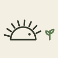
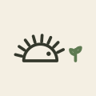

Brand
A hedgehog — dochi — watching a sprout grow in its garden.
Logo








Colours
Ink
#34382CLeaf
#5E7A52Paper
#F4EFE3Leaf, light
#9DB58CUsing the mark
- Keep clear space around it of at least the sprout’s height.
- Keep it at least 24 px tall on screen. Below that, use the favicon, which is the hedgehog alone.
- Use the dark version on dark backgrounds, and the one-colour version when only one ink is available.
- Don’t recolour, stretch, rotate or outline it, or separate the hedgehog from the sprout.
- Don’t put it on busy photos where the spines get lost.
Type
The wordmark is set in a serif, with garden in italic leaf green. On the site it uses the system serif; in images it is set in Newsreader Semibold (SIL Open Font License).